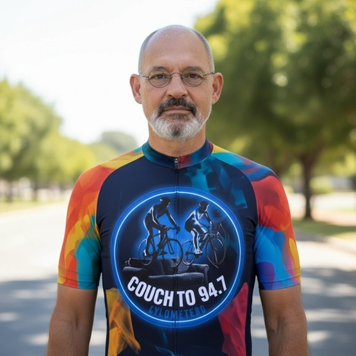
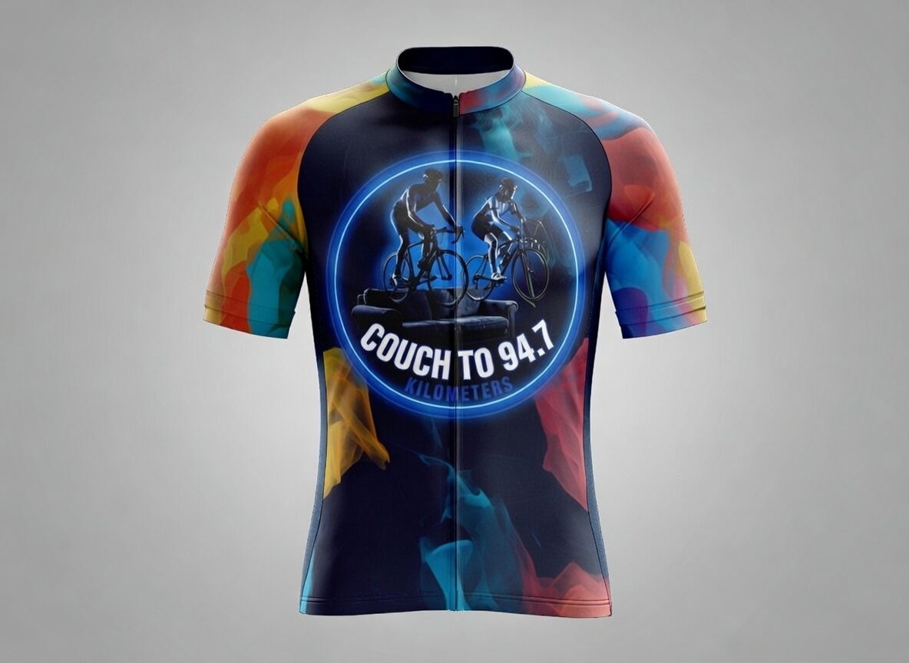
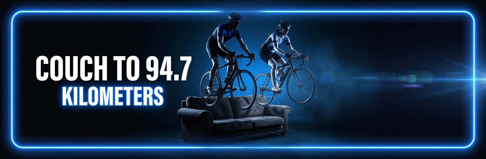

Creator Profile

Why this exists
I believe ordinary people can achieve extraordinary endurance goals when they are given clear structure, honest guidance, and steady encouragement.
Couch to 94.7 exists to take someone from the couch all the way to the finish line of the Momentum 94.7 — using progressive training, simple technology, and a supportive community.
How it works
The system combines a 12-week progressive plan, Functional Threshold Power (FTP) based training, clear bike-fit guidance, and practical tools that work on a normal phone.
What you get
- A complete Progressive Web App for indoor & outdoor training
- Detailed cycling documents (Bike Fit, Phone Setup, User Manual)
- Original music and promotional videos
- Certificates as you progress through Foundation → Build → Race Prep
Cycling Documents

Cycling Documents
Note: This is a summary. The complete documents are available inside the Couch to 94.7 app.
1. Bike Fit Optimization
Maximum Power. Minimum Pain.
- Frame size & stand-over clearance
- Saddle height (LeMond method)
- Saddle fore/aft (KOPS rule)
- Reach, drop and handlebar position
- Cleat alignment
2. Phone Setup & Compatibility Guide
- Use Google Chrome for best results
- Android 6.0+ recommended for Bluetooth sensors
- Add the app to your home screen
- Enable Location + Bluetooth permissions
3. Final User Manual (Version 1.0)
- 12-week training structure
- Understanding FTP, TSS and Intensity Factor
- Sensor pairing and indoor setup
- Race-day nutrition and equipment advice
Contact: @NeilOliver1640 on X
App Hub

Couch to 94.7
The complete training companion — from couch to the Momentum 94.7 finish line. Progressive plan, FTP-based workouts, sensor support and certificates.
Launch App →